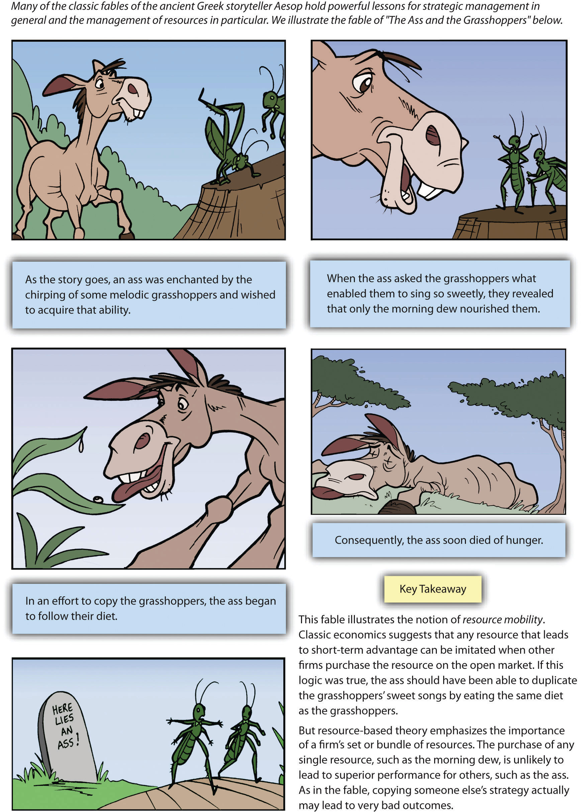

Southwest Airlines provides an illustration of resource-based theory in action. Resource-based theoryA theory that contends that the possession of strategic resources can provide an organization with competitive advantages over its rivals. contends that the possession of strategic resources provides an organization with a golden opportunity to develop competitive advantages over its rivals (Figure 4.1 "Resource-Based Theory: The Basics"). These competitive advantages in turn can help the organization enjoy strong profits.Barney, J. B. 1991. Firm resources and sustained competitive advantage. Journal of Management, 17, 99–120; Wernerfelt, B. 1984. A resource-based view of the firm. Strategic Management Journal, 5, 171–180.
A strategic resource is an asset that is valuable, rare, difficult to imitate, and nonsubstitutable.Barney, J. B. 1991. Firm resources and sustained competitive advantage. Journal of Management, 17, 99–120; Chi, T. 1994. Trading in strategic resources: Necessary conditions, transaction cost problems, and choice of exchange structure. Strategic Management Journal, 15(4), 271–290. A resource is valuableResources that help a firm create strategies that capitalize on opportunities and ward off threats. to the extent that it helps a firm create strategies that capitalize on opportunities and ward off threats. Southwest Airlines’ culture fits this standard well. Most airlines struggle to be profitable, but Southwest makes money virtually every year. One key reason is a legendary organizational culture that inspires employees to do their very best. This culture is also rareResources that are unique when contrasted with the resources of competitors. in that strikes, layoffs, and poor morale are common within the airline industry.
Competitors have a hard time duplicating resources that are difficult to imitateResources that cannot be easily duplicated by competitors and are often protected by various legal means, including trademarks, patents, and copyrights.. Some difficult to imitate resources are protected by various legal means, including trademarks, patents, and copyrights. Other resources are hard to copy because they evolve over time and they reflect unique aspects of the firm. Southwest’s culture arose from its very humble beginnings. The airline had so little money that at times it had to temporarily “borrow” luggage carts from other airlines and put magnets with the Southwest logo on top of the rivals’ logo. Southwest is a “rags to riches” story that has evolved across several decades. Other airlines could not replicate Southwest’s culture, regardless of how hard they might try, because of Southwest’s unusual history.
A resource is nonsubstitutableResources that exist when competitors cannot find alternative ways to gain the benefits that a resource provides. when competitors cannot find alternative ways to gain the benefits that a resource provides. A key benefit of Southwest’s culture is that it leads employees to treat customers well, which in turn creates loyalty to Southwest among passengers. Executives at other airlines would love to attract the customer loyalty that Southwest enjoys, but they have yet to find ways to inspire the kind of customer service that the Southwest culture encourages.
Southwest Airlines’ unique culture is reflected in the customization of their aircraft over the years, such as the “Lone Star One” design.
Image courtesy of planephotoman, http://en.wikipedia.org/wiki/File:Southwest_737_Lonestar_One.jpg.
Ideally, a firm will have a culture, like Southwesta firm will own resources like Southwest’s culture#8217;s, that embraces the four qualities shown in Figure 4.1 "Resource-Based Theory: The Basics". that have all four of these qualities. If so, these resources can provide not only a competitive advantage but also a sustained competitive advantageA competitive advantage that will endure over time.—one that will endure over time and help the firm stay successful far into the future. Resources that do not have all four qualities can still be very useful, but they are unlikely to provide long-term advantages. A resource that is valuable and rare but that can be imitated, for example, might provide an edge in the short term, but competitors can overcome such an advantage eventually.
Resource-based theory also stresses the merit of an old saying: the whole is greater than the sum of its parts. Specifically, it is also important to recognize that strategic resources can be created by taking several strategies and resources that each could be copied and bundling them together in a way that cannot be copied. For example, Southwest’s culture is complemented by approaches that individually could be copied—the airline’s emphasis on direct flights, its reliance on one type of plane, and its unique system for passenger boarding—to create a unique business model whose performance is without peer in the industry.
Resource-based theory can be confusing because the term resources is used in many different ways within everyday common language. It is important to distinguish strategic resources from other resources. To most individuals, cash is an important resource. Tangible goods such as one’s car and home are also vital resources. When analyzing organizations, however, common resources such as cash and vehicles are not considered to be strategic resources. Resources such as cash and vehicles are valuable, of course, but an organization’s competitors can readily acquire them. Thus an organization cannot hope to create an enduring competitive advantage around common resources.
On occasion, events in the environment can turn a common resource into a strategic resource. Consider, for example, a very generic commodity: water. Humans simply cannot live without water, so water has inherent value. Also, water cannot be imitated (at least not on a large scale), and no other substance can substitute for the life-sustaining properties of water. Despite having three of the four properties of strategic resources, water in the United States has remained cheap. Yet this may be changing. Major cities in hot climates such as Las Vegas, Los Angeles, and Atlanta are confronted by dramatically shrinking water supplies. As water becomes more and more rare, landowners in Maine stand to benefit. Maine has been described as “the Saudi Arabia of water” because its borders contain so much drinkable water. It is not hard to imagine a day when companies in Maine make huge profits by sending giant trucks filled with water south and west or even by building water pipelines to service arid regions.
The tangibility of a firm’s resources is an important consideration within resource-based theory. Tangible resourcesResources than can be readily seen, touched, and quantified, such as physical assets, property, plant, equipment, and cash. are resources that can be readily seen, touched, and quantified. Physical assets such as a firm’s property, plant, and equipment, as well as cash, are considered to be tangible resources. In contrast, intangible resourcesResources that are difficult to see, to touch, or to quantify, such as the knowledge and skills of employees, a firm’s reputation, and a firm’s culture. are quite difficult to see, to touch, or to quantify. Intangible resources include, for example, the knowledge and skills of employees, a firm’s reputation, and a firm’s culture. In comparing the two types of resources, intangible resources are more likely to meet the criteria for strategic resources (i.e., valuable, rare, difficult to imitate, and nonsubstitutable) than are tangible resources. Executives who wish to achieve long-term competitive advantages should therefore place a premium on trying to nurture and develop their firms’ intangible resources.
CapabilitiesWhat the organization can do based on the resources it possesses. are another key concept within resource-based theory. A good and easy-to-remember way to distinguish resources and capabilities is this: resources refer to what an organization owns, capabilities refer to what the organization can do (Figure 4.2 "Resources and Capabilities"). Capabilities tend to arise over time as a firm takes actions that build on its strategic resources. Southwest Airlines, for example, has developed the capability of providing excellent customer service by building on its strong organizational culture. Capabilities are important in part because they are how organizations capture the potential value that resources offer. Customers do not simply send money to an organization because it owns strategic resources. Instead, capabilities are needed to bundle, to manage, and otherwise to exploit resources in a manner that provides value added to customers and creates advantages over competitors.
Some firms develop a dynamic capabilityA unique ability to create new capabilities by continually updating a firm’s array of capabilities to keep pace with changes in its environment.. This means that a firm has a unique capability of creating new capabilities. Said differently, a firm that enjoys a dynamic capability is skilled at continually updating its array of capabilities to keep pace with changes in its environment. General Electric, for example, buys and sells firms to maintain its market leadership over time, while Coca-Cola has an uncanny knack for building new brands and products as the soft-drink market evolves. Not surprisingly, both of these firms rank among the top thirteen among the “World’s Most Admired Companies” for 2011.
That Thing You Do!
How can the members of an organization reach success “doing that thing they do”? According to resource-based theory, one possible road to riches is creating—on purpose or by accident—a unique combination of resources. In the 1996 movie That Thing You Do!, unwittingly assembling a unique bundle of resources leads a 1960s band called The Wonders to rise from small-town obscurity to the top of the music charts. One resource is lead singer Jimmy Mattingly, who possesses immense musical talent. Another is guitarist Lenny Haise, whose fun attitude reigns in the enigmatic Mattingly. Although not a formal band member, Mattingly’s girlfriend Faye provides emotional support to the group and even suggests the group’s name. When the band’s usual drummer has to miss a gig due to injury, the door is opened for charismatic drummer Guy Patterson, whose energy proves to be the final piece of the puzzle for The Wonders.
Despite Mattingly’s objections, Guy spontaneously adds an up-tempo beat to a sleepy ballad called “That Thing You Do!” during a local talent contest. When the talent show audience goes crazy in response, it marks the beginning of a meteoric rise for both the song and the band. Before long, The Wonders perform on television and “That Thing You Do!” is a top-ten hit record. The band’s magic vanishes as quickly as it appeared, however. After their bass player joins the Marines, Lenny elopes on a whim, and Jimmy’s diva attitude runs amok, the band is finished and Guy is left to “wonder” what might have been. That Thing You Do! illustrates that while bundling resources in a unique way can create immense success, preserving and managing these resources over time can be very difficult.
Liv Tyler plays Faye Dolan, the love interest of drummer Guy Patterson, in That Thing You Do!
Image courtesy of Daniel Dormann, http://en.wikipedia.org/wiki/File:LivTylerJune08.jpg.
Resource-based theory has evolved in recent years to provide a way to understand how strategic resources and capabilities allow firms to enjoy excellent performance. But more than one wry observer has wondered aloud, “Is resource-based theory just old wine in a new bottle?” This is a question worth considering because the role of resources in shaping success and failure has been discussed for many centuries.
Aesop was a Greek storyteller who lived approximately 2,500 years ago. Aesop is known in particular for having created a series of fables—stories that appear on the surface to be simply children’s tales but that offer deep lessons for everyone. One of Aesop’s fables focuses on an ass (donkey) and some grasshoppers. When the ass tries to duplicate the sweet singing of the grasshoppers by copying their diet, he soon dies of starvation. Attempting to replicate the grasshoppers’ unique singing capability proved to be a fatal mistake (Figure 4.3 "Aesop’s Fables"). The fable illustrates a central point of resource-based theory: it is an array of resources and capabilities that fuels enduring success, not any one resource alone.
In a far more recent example, sociologist Philip Selznick developed the concept of distinctive competenceA set of activities that an organization performs especially well. through a series of books in the 1940s and 1950s.Selznick, P. 1957. Leadership in administration. New York: Harper; Selznick, P. 1952. The organizational weapon. New York, NY: McGraw-Hill; Selznick, P. 1949. TVA and the grass roots. Berkeley, CA: University of California Press. A distinctive competence is a set of activities that an organization performs especially well. Southwest Airlines, for example, appears to have a distinctive competency in operations, as evidenced by how quickly it moves its flights in and out of airports. Further, Selznick suggested that possessing a distinctive competency creates a competitive advantage for a firm. Certainly, there is plenty of overlap between the concept of distinctive competency, on the one hand, and capabilities, on the other.
Figure 4.3 Aesop’s Fables
Adapted from Chapter 4 of Atlas Black: Managing to Succeed and Short, J. & Ketchen, D. 2005. Using classic literature to teach timeless truths: An illustration using Aesop’s fables to teach strategic management. Journal of Management Education, 29, 6, 816–832.
So is resource-based theory in fact old wine in a new bottle? Not really. Resource-based theory builds on past ideas about resources, but it represents a big improvement on past ideas in at least two ways. First, resource-based theory offers a complete framework for analyzing organizations, not just snippets of valuable wisdom like Aesop and Selznick provided. Second, the ideas offered by resource-based theory have been developed and refined through scores of research studies involving thousands of organizations. In other words, there is solid evidence backing it up.
Leveraging resources and capabilities to create desirable products and services is important, but customers must still be convinced to purchase these goods and services. The marketing mixThe four Ps (product, price, place, and promotion) that firms use to offer customers a coherent and persuasive message.—also known as the four Ps of marketing—provides important insights into how to make this happen. A master of the marketing mix was circus impresario P. T. Barnum, who is famous in part for his claim that “there’s a sucker born every minute.” The real purpose of the marketing mix is not to trick customers but rather to provide a strong alignment among the four Ps (product, price, place, and promotion) to offer customers a coherent and persuasive message (Figure 4.4 "The Marketing Mix").
A firm’s productGoods and services a firm sells to customers. is what it sells to customers. Southwest Airlines sells, of course, airplane flights. The airline tries to set its flights apart from those of airlines by making flying fun. This can include, for example, flight attendants offering preflight instructions as a rap. The priceThe amount firms charge for their goods or services. of a good or service should provide a good match with the value offered. Throughout its history, Southwest has usually charged lower airfares than its rivals. PlaceA physical purchase point as well as a distribution channel. can refer to a physical purchase point as well as a distribution channel. Southwest has generally operated in cities that are not served by many airlines and in secondary airports in major cities. This has allowed the firm to get favorable lease rates at airports and has helped it create customer loyalty among passengers who are thankful to have access to good air travel.
Finally, promotionThe communications used to market a product, including advertising, public relations, and other forms of direct and indirect selling. consists of the communications used to market a product, including advertising, public relations, and other forms of direct and indirect selling. Southwest is known for its clever advertising. In a recent television advertising campaign, for example, Southwest lampooned the baggage fees charged by most other airlines while highlighting its more customer-friendly approach to checked luggage. Given the consistent theme of providing a good value plus an element of fun to passengers that is developed across the elements of the marketing mix, it is no surprise that Southwest has been so successful within a very challenging industry.
Few executives in history have had the marketing savvy of P. T. Barnum.
Image courtesy of The Strobridge Litho. Co., Cincinnati & New York, http://en.wikipedia.org/wiki/File:Barnum_%26_Bailey_clowns_and_geese2.jpg.